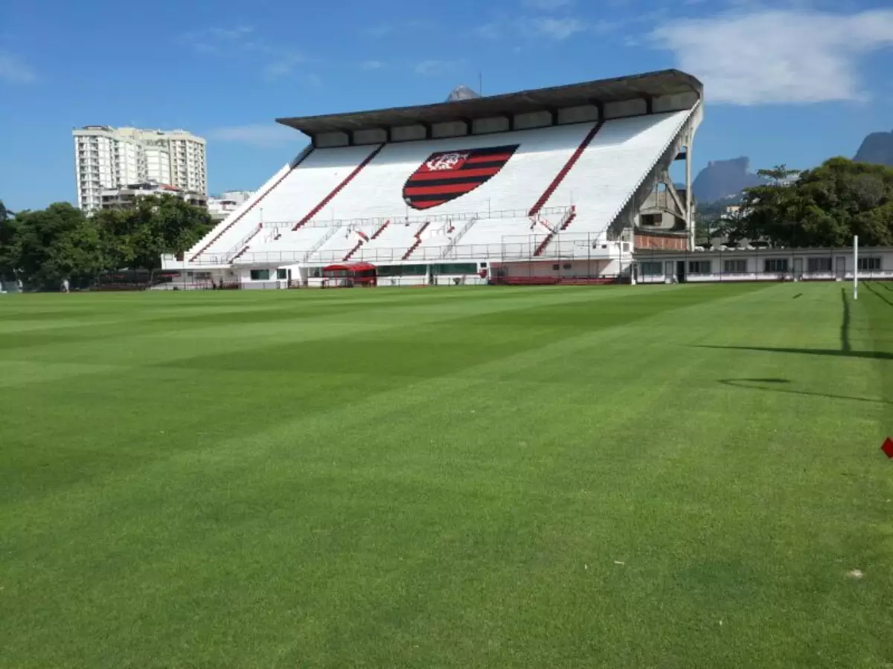

O Estádio do flamengo começou em janeiro de 1926, quando um grupo representativo de rubro-negros, liderado pelo presidente do clube, Faustino Esposel, iniciou entendimentos com o prefeito do então Distrito Federal, Alaor Prata, para obter um terreno onde pudesse erguer uma nova sede para os chamados "sports terrestres". A área oferecida, de 34.120 metros quadrados, literalmente às margens da Lagoa Rodrigo de Freitas, chegou a ser descartada, pois parte do quadro social a considerou "um areal de fim de mundo", que dependia em sua parte de aterro e, é claro, de urbanização. Mas a habilidade de Esposel contornou a situação, e o contrato de arrendamento acabou sendo assinado em 2 de março daquele ano. O Flamengo, no entanto, só passou a planejar a transferência das atividades para o local, conhecido então como Freguesia da Gávea, em 1931, na administração Carlos Mamede. Faltava sobretudo, para torná-la uma autêntica "praça de sports", o dinheiro para a construção do estádio de futebol, problema que começou a ser solucionado com a compreensão dos associados, que concordaram com um acréscimo em suas mensalidades. Além disso, foi preciso que o prefeito Pedro Ernesto, atendendo a pedido do presidente rubro-negro José Bastos Padilha, concedesse, através de decreto, um empréstimo de 70 contos de réis para as obras.
Em de 14 de novembro de 1931, pelo decreto municipal 3.686, o Flamengo ficou com o direito de cessão e aforamento do terreno da Lagoa. Ali o clube construiu seu primeiro estádio de futebol, com cercas de madeira.

Jogos Históricos
O jogo de estreia do Flamengo no estádio foi contra o Vasco da Gama em 4 de setembro de 1938 pelo campeonato carioca daquele ano. Na ocasião, a equipe vascaína ganhou por 2 a 0 e o primeiro gol do estádio foi marcado por Niginho, mas a alegria era mesmo rubro-negra, por estar com a nova casa concluída. Em 16 de abril de 1939, o presidente da FIFA, Jules Rimet, assistiu das arquibancadas do estádio à goleada rubro-negra diante do Botafogo por 4 a 1.
O Fla Flu da Lagoa, realizado em 23 de novembro de 1941, entrou para a história. Neste embate, os jogadores do Fluminense chutaram de propósito bolas na direção da Lagoa Rodrigo de Freitas (na época, o estádio e a lagoa eram vizinhos sem o obstáculo do clube social ao seu leste, eram pouco mais de 260 metros de distância), tentando ganhar tempo no jogo disputado no estádio da Gávea, e os remadores do Flamengo teriam se lançado às águas para resgatar as bolas como gangulas aquáticos. O emocionante empate por 2 a 2 garantiu o título para o Flu, conforme fatos publicados em O Globo Esportivo, edição 171 de 1941, em sua página 5.
Projeto
Atualmente, o Flamengo não joga no Estádio da Gávea. O clube sempre utiliza o Maracanã ou outros estádios. O Flamengo ao longo da história acumula projetos de revitalização da Gávea, tornando-a uma arena para enfrentar equipes de menor expressão.
Em outubro de 2013 o clube assinou contrato com a concessionária 'Maracanã SA' em que consta o compromisso de que a construtora Odebrecht (sócia majoritária do consórcio administrador do Maracanã) realizará estudo de viabilidade para a construção ou reforma do estádio para ampliação do estádio para 25.000 pessoas, estudo esse que deveria ter sido finalizado até o fim do ano de 2014.
Visando economia e menores custos, uma vez que o Maracanã é o maior estádio do Brasil e os seus custos operacionais são igualmente grandes, e tendo em mãos o fato do Flamengo ter faturado apenas 13% do arrecadado com a bilheteria mandante em 2018, surgiu o projeto Arena da Gávea, feito por Eduardo El Khouri. O Projeto de 31.470 lugares se mostrou ser de longe o mais provável de sair do papel após tantos projetos e ideias de arenas e estádios próprios para o Flamengo e seria levantado justamente onde hoje se encontra o atual Estádio da Gávea.